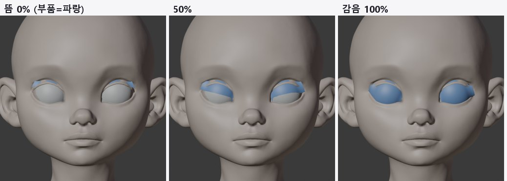
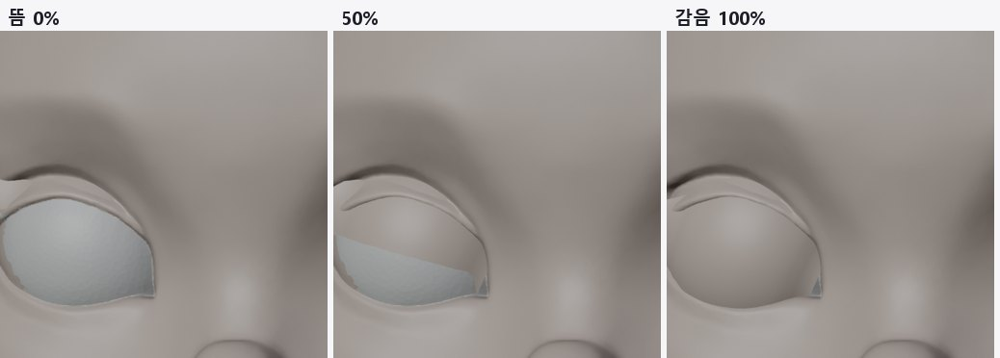
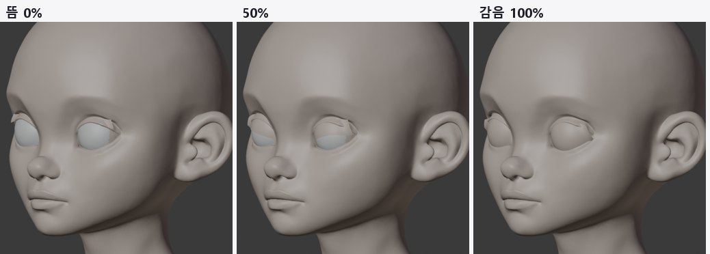
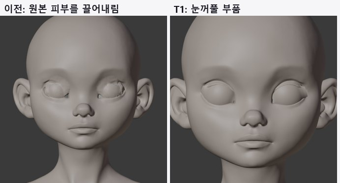
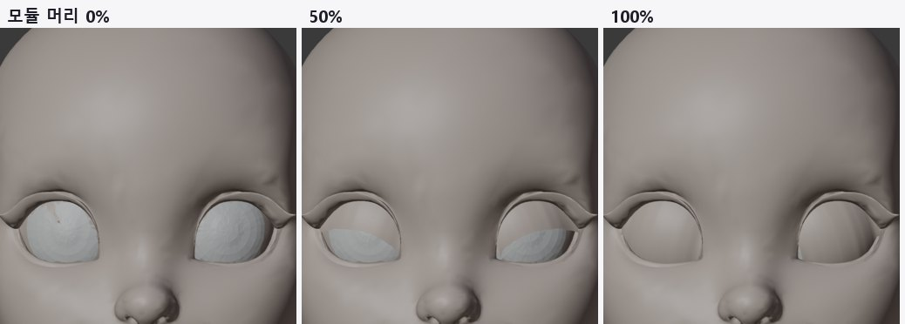
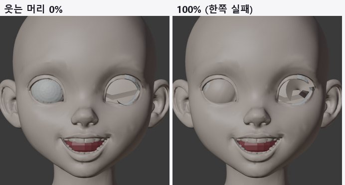

<title>T1 눈꺼풀 부품 테스트</title>
<link rel="preconnect" href="https://fonts.googleapis.com">
<link rel="preconnect" href="https://fonts.gstatic.com" crossorigin>
<link rel="stylesheet" href="https://fonts.googleapis.com/css2?family=IBM+Plex+Mono:wght@400;500&family=IBM+Plex+Sans+KR:wght@400;500;600;700&display=swap">
<style>
/* Layout: one reading column; figures full width of the column */
:root{--bg:#F5F6F8;--paper:#fff;--ink:#1B1F27;--muted:#5B6473;--line:#DDE1E8;--soft:#EEF1F6;--accent:#2F5BD3;--good:#1E8A52;--bad:#C83A32;--warn:#B26A00;
--f-body:"IBM Plex Sans KR","Malgun Gothic",system-ui,sans-serif;--f-mono:"IBM Plex Mono",ui-monospace,Consolas,monospace}
@media (prefers-color-scheme: dark){:root:not([data-theme="light"]){--bg:#12151B;--paper:#191D25;--ink:#E5E8EE;--muted:#9BA4B3;--line:#2B313C;--soft:#20252F;--accent:#7FA2FF;--good:#5ACB8C;--bad:#FF6F66;--warn:#F0AE48;color-scheme:dark}}
:root[data-theme="dark"]{--bg:#12151B;--paper:#191D25;--ink:#E5E8EE;--muted:#9BA4B3;--line:#2B313C;--soft:#20252F;--accent:#7FA2FF;--good:#5ACB8C;--bad:#FF6F66;--warn:#F0AE48;color-scheme:dark}
*{box-sizing:border-box}
body{background:var(--bg);color:var(--ink);font-family:var(--f-body);font-size:16px;line-height:1.7}
main{max-width:920px;margin:0 auto;padding-inline:16px;padding-block:26px 60px}
h1{font-size:clamp(25px,4vw,33px);margin:0;line-height:1.25;text-wrap:balance}
.sub{color:var(--muted);margin:6px 0 0}
h2{font-size:21px;margin:38px 0 6px;text-wrap:balance}
h3{font-size:17px;margin:20px 0 4px}
p,ul,ol{max-width:72ch} li{margin:3px 0}
figure{margin:16px 0;background:var(--paper);border:1px solid var(--line);border-radius:12px;padding:12px}
figure img{display:block;width:100%;height:auto;border-radius:6px;background:#2a2a2e}
figure svg{display:block;width:100%;height:auto}
figcaption{font-size:14px;color:var(--muted);margin-top:8px}
figcaption b{color:var(--ink)}
.tbl{overflow-x:auto;margin:12px 0}
table{border-collapse:collapse;font-size:14.5px;min-width:540px;width:100%;background:var(--paper)}
th,td{border:1px solid var(--line);padding:6px 10px;text-align:left;vertical-align:top}
th{background:var(--soft)}
td.num{font-family:var(--f-mono);font-variant-numeric:tabular-nums;white-space:nowrap}
.good{color:var(--good);font-weight:600}.bad{color:var(--bad);font-weight:600}.warn{color:var(--warn);font-weight:600}
.box{background:var(--paper);border:1px solid var(--line);border-left:4px solid var(--accent);border-radius:0 10px 10px 0;padding:12px 16px;margin:14px 0}
code{font-family:var(--f-mono);font-size:13.5px;background:var(--soft);padding:1px 5px;border-radius:4px;overflow-wrap:anywhere}
svg text{font-family:var(--f-body)}
.s-ink{fill:var(--ink)}.s-muted{fill:var(--muted)}.s-paper{fill:var(--paper)}.s-soft{fill:var(--soft)}.s-acc{fill:var(--accent)}.s-good{fill:var(--good)}.s-bad{fill:var(--bad)}
.st-acc{stroke:var(--accent)}.st-good{stroke:var(--good)}.st-ink{stroke:var(--ink)}.st-muted{stroke:var(--muted)}.st-bad{stroke:var(--bad)}
</style>
<main>
<h1>T1 · 눈꺼풀 부품으로 깜빡임</h1>
<p class="sub">2026-10-12 · 원본 얼굴은 정점 하나도 움직이지 않고, 새로 추가한 눈꺼풀 부품만 뼈로 회전 · 머리 3개</p>

<div class="box"><b>결론</b>: 원본을 그대로 둔 채 깜빡임이 됩니다. v3와 모듈 머리는 감았을 때 눈을 100% 덮고, 0~100% 전 구간에서 눈알을 뚫지 않으며, 원본 얼굴 변경은 0.0mm입니다. 남은 것은 v3의 뜬 상태에서 눈꺼풀 부품 가장자리가 가늘게 보이는 문제(정점 기준 11~16%)와 입력이 부적합한 웃는 머리입니다.</div>

<h2>1. 작동 원리</h2>
<p>이전 방식은 원본 눈꺼풀 피부를 끌어내렸습니다. Tripo 눈꺼풀은 두꺼운 띠라서 끌어내리면 구겨졌습니다. 이번에는 원본 피부를 그대로 두고, 그 밑에 얇은 눈꺼풀 부품을 숨겨 둡니다. 깜빡일 때 부품만 눈알 중심을 축으로 회전시켜 눈을 덮습니다.</p>
<figure>
<svg viewBox="0 0 860 300" role="img" aria-label="눈꺼풀 부품 단면 원리">
  <g transform="translate(30,30)">
    <text x="0" y="0" class="s-ink" font-size="15" font-weight="700">평소 (뜬 눈) · 옆 단면</text>
    <circle cx="150" cy="140" r="80" class="s-soft st-muted" stroke-width="2"/>
    <circle cx="150" cy="140" r="3" class="s-ink"/><text x="158" y="150" class="s-muted" font-size="12">눈알 중심</text>
    <path d="M60 40 C120 18 220 26 262 52" fill="none" stroke="#c9a28a" stroke-width="12" stroke-linecap="round"/>
    <path d="M86 92 C80 100 76 110 74 118" fill="none" stroke="#c9a28a" stroke-width="16" stroke-linecap="round"/>
    <path d="M95 77 A84 84 0 0 1 200 66" fill="none" class="st-acc" stroke-width="5"/>
    <text x="210" y="90" class="s-acc" font-size="13">눈꺼풀 부품 (띠 밑에 숨음)</text>
    <path d="M76 172 C86 196 112 214 150 216" fill="none" stroke="#c9a28a" stroke-width="8" stroke-linecap="round"/>
    <text x="0" y="250" class="s-muted" font-size="12.5">원본 눈꺼풀 띠·피부는 그대로. 부품은 눈알 표면에서 0.8mm 떨어진 구면 위.</text>
  </g>
  <g transform="translate(460,30)">
    <text x="0" y="0" class="s-ink" font-size="15" font-weight="700">깜빡임 100% · 옆 단면</text>
    <circle cx="150" cy="140" r="80" class="s-soft st-muted" stroke-width="2"/>
    <circle cx="150" cy="140" r="3" class="s-ink"/>
    <path d="M60 40 C120 18 220 26 262 52" fill="none" stroke="#c9a28a" stroke-width="12" stroke-linecap="round"/>
    <path d="M86 92 C80 100 76 110 74 118" fill="none" stroke="#c9a28a" stroke-width="16" stroke-linecap="round"/>
    <path d="M84 88 A84 84 0 0 0 86 196" fill="none" class="st-acc" stroke-width="5"/>
    <path d="M150 140 L84 88 M150 140 L86 196" class="st-muted" stroke-width="1" stroke-dasharray="4 3"/>
    <text x="104" y="146" class="s-muted" font-size="12">회전</text>
    <path d="M76 172 C86 196 112 214 150 216" fill="none" stroke="#c9a28a" stroke-width="8" stroke-linecap="round"/>
    <text x="0" y="250" class="s-muted" font-size="12.5">부품이 띠 밑에서 나와 눈알을 덮고 아래 눈꺼풀 밑으로 들어감.</text>
    <text x="0" y="268" class="s-muted" font-size="12.5">회전은 원호를 따르므로 중간에도 눈알을 파고들지 않음.</text>
  </g>
</svg>
<figcaption><b>그림 1.</b> 단면 원리. 파란 선이 새로 추가한 눈꺼풀 부품입니다. 원본(살색)은 움직이지 않습니다.</figcaption>
</figure>
<figure>
<svg viewBox="0 0 860 220" role="img" aria-label="눈꺼풀 뼈 9개 배치">
  <text x="20" y="26" class="s-ink" font-size="15" font-weight="700">정면에서 본 뼈 배치 (한쪽 눈)</text>
  <path d="M120 120 Q330 20 640 100 Q470 200 250 170 Q160 160 120 120 Z" class="s-soft st-muted" stroke-width="2"/>
  <g font-size="12">
    <line x1="140" y1="200" x2="620" y2="200" class="st-acc" stroke-width="2"/>
    <g class="s-acc">
      <circle cx="140" cy="200" r="5"/><circle cx="200" cy="200" r="5"/><circle cx="260" cy="200" r="5"/><circle cx="320" cy="200" r="5"/><circle cx="380" cy="200" r="5"/><circle cx="440" cy="200" r="5"/><circle cx="500" cy="200" r="5"/><circle cx="560" cy="200" r="5"/><circle cx="620" cy="200" r="5"/>
    </g>
    <text x="130" y="216" class="s-muted">바깥 눈꼬리</text><text x="575" y="216" class="s-muted">안쪽 눈꼬리</text>
    <path d="M140 196 V128 M260 196 V68 M380 196 V60 M500 196 V80 M620 196 V108" class="st-muted" stroke-dasharray="3 3"/>
    <text x="660" y="70" class="s-ink">뼈마다 회전각이 다름</text>
    <text x="660" y="90" class="s-muted">눈이 높은 가운데는 크게(약 70°)</text>
    <text x="660" y="110" class="s-muted">눈꼬리는 작게(8~25°)</text>
    <text x="660" y="140" class="s-muted">부품 정점은 가까운 두 뼈를</text>
    <text x="660" y="158" class="s-muted">거리 비율로 섞어서 따라감</text>
  </g>
</svg>
<figcaption><b>그림 2.</b> 한 눈에 뼈 9개. 모두 같은 눈 축(바깥→안쪽 눈꼬리) 위에 있어서 회전축은 같고, 회전각만 다릅니다. 뼈 하나로 하면 눈꼬리에서 부품이 삐져나왔습니다(4장).</figcaption>
</figure>

<h2>2. 순서</h2>
<figure>
<svg viewBox="0 0 860 150" role="img" aria-label="T1 처리 순서">
  <g font-size="12.5">
    <rect x="6" y="30" width="128" height="74" rx="8" class="s-paper st-acc" stroke-width="1.5"/><text x="70" y="58" text-anchor="middle" class="s-ink" font-weight="600">① 원본 리깅</text><text x="70" y="78" text-anchor="middle" class="s-muted">눈·입 자르기</text><text x="70" y="94" text-anchor="middle" class="s-muted">rig_original</text>
    <rect x="148" y="30" width="128" height="74" rx="8" class="s-paper st-acc" stroke-width="1.5"/><text x="212" y="58" text-anchor="middle" class="s-ink" font-weight="600">② 눈 정보</text><text x="212" y="78" text-anchor="middle" class="s-muted">중심·축·테두리</text><text x="212" y="94" text-anchor="middle" class="s-muted">eyes_meta.json</text>
    <rect x="290" y="30" width="128" height="74" rx="8" class="s-paper st-acc" stroke-width="1.5"/><text x="354" y="58" text-anchor="middle" class="s-ink" font-weight="600">③ 단면 28개</text><text x="354" y="78" text-anchor="middle" class="s-muted">위·아래 틈 각도</text><text x="354" y="94" text-anchor="middle" class="s-muted">눈알 표면 반지름</text>
    <rect x="432" y="30" width="128" height="74" rx="8" class="s-paper st-acc" stroke-width="1.5"/><text x="496" y="58" text-anchor="middle" class="s-ink" font-weight="600">④ 부품 생성</text><text x="496" y="78" text-anchor="middle" class="s-muted">28×18 격자</text><text x="496" y="94" text-anchor="middle" class="s-muted">띠 밑에 숨김</text>
    <rect x="574" y="30" width="128" height="74" rx="8" class="s-paper st-acc" stroke-width="1.5"/><text x="638" y="58" text-anchor="middle" class="s-ink" font-weight="600">⑤ 뼈 9개</text><text x="638" y="78" text-anchor="middle" class="s-muted">회전각·가중치</text><text x="638" y="94" text-anchor="middle" class="s-muted">방향 자동 판정</text>
    <rect x="716" y="30" width="138" height="74" rx="8" class="s-paper st-good" stroke-width="2"/><text x="785" y="58" text-anchor="middle" class="s-ink" font-weight="600">⑥ 자동 검사</text><text x="785" y="78" text-anchor="middle" class="s-muted">숨김·덮임·뚫림</text><text x="785" y="94" text-anchor="middle" class="s-muted">원본 변경</text>
    <path d="M134 67 H144 M276 67 H286 M418 67 H428 M560 67 H570 M702 67 H712" class="st-muted" stroke-width="2"/>
    <text x="6" y="136" class="s-muted">전부 무인 실행 (Blender 백그라운드). 사람 손이 들어가는 단계 없음.</text>
  </g>
</svg>
<figcaption><b>그림 3.</b> 처리 순서. ①은 이전 테스트의 원본 유지 리깅이고, ②~⑥이 이번에 추가한 단계입니다.</figcaption>
</figure>
<div class="tbl"><table>
<tr><th>단계</th><th>하는 일</th><th>설정값</th></tr>
<tr><td>② 눈 정보</td><td>잘라 낸 눈알 표면으로 구 맞춤 → 중심. 눈꼬리 두 점 → 눈 축. 깊이 탐색으로 찾은 위·아래 눈꺼풀 테두리</td><td>-</td></tr>
<tr><td>③ 단면</td><td>눈 축을 따라 28곳에서 위 테두리 각도·아래 테두리 각도·그 사이 틈을 잼. 부품이 쓸고 지나갈 각도 범위에서 실제 눈알 표면 반지름을 광선으로 잼</td><td>바깥·안쪽 눈꼬리에서 1mm 안쪽까지</td></tr>
<tr><td>④ 부품</td><td>단면마다 "필요 회전 + 숨김 여유" 높이의 구면 띠. 아래 가장자리를 위 테두리보다 0.11rad 위(띠 밑)에 둠</td><td>여유 0.8mm, 숨김 0.11rad, 아래 겹침 0.05rad</td></tr>
<tr><td>⑤ 뼈</td><td>눈 축 위에 뼈 9개. 각 뼈 회전각 = 담당 구간에서 필요한 회전 중 최댓값. 정점은 가까운 두 뼈를 거리 비율로 섞음. 감는 방향(부호)은 시험 회전으로 자동 판정</td><td>뼈 9개/눈</td></tr>
<tr><td>⑥ 검사</td><td>평소 부품이 앞에서 보이는 비율, 감았을 때 눈 덮임 비율, 0·50·100%에서 눈알 안으로 들어간 정점 수, 원본 얼굴 정점 변화</td><td>qa_lids.json</td></tr>
</table></div>

<h2>3. 결과</h2>
<figure><figcaption><b>그림 4. v3, 부품을 파란색으로 표시.</b> 평소에는 거의 숨어 있고, 50%에서 내려오며, 100%에서 눈 전체를 덮습니다.</figcaption></figure>
<figure><figcaption><b>그림 5. v3 눈 확대 (같은 살색).</b> 감으면 원본 눈꺼풀 띠가 쌍꺼풀 선처럼 남고 그 아래가 매끈하게 덮입니다. 이전 방식의 구겨짐이 없습니다.</figcaption></figure>
<figure><figcaption><b>그림 6. v3, 3/4 각도.</b></figcaption></figure>
<figure><figcaption><b>그림 7. 이전 방식과 비교.</b> 왼쪽은 원본 피부를 끌어내린 결과(구겨짐), 오른쪽은 이번 눈꺼풀 부품입니다.</figcaption></figure>
<figure><figcaption><b>그림 8. explorer 모듈 머리.</b> 숨김·덮임·뚫림 모두 통과했습니다.</figcaption></figure>
<figure><figcaption><b>그림 9. explorer 웃는 머리.</b> 한쪽 눈은 정상이고, 다른 쪽은 입력 눈 표면이 평면이라 깨집니다. 입력 규칙 검사(T5)에서 걸러야 할 사례입니다.</figcaption></figure>
<div class="tbl"><table>
<tr><th>머리</th><th>원본 변경</th><th>평소 보이는 비율 (L / R)</th><th>감았을 때 덮임</th><th>눈알 뚫림 0·50·100%</th><th>판정</th></tr>
<tr><td>character1 v3</td><td class="num good">0.0mm</td><td class="num warn">11% / 16%</td><td class="num good">100% / 100%</td><td class="num good">0 · 0 · 0</td><td>통과, 가장자리 보임 보완 필요</td></tr>
<tr><td>explorer 모듈 머리</td><td class="num good">0.0mm</td><td class="num good">0% / 0%</td><td class="num good">100% / 100%</td><td class="num good">0 · 0 · 0</td><td class="good">통과</td></tr>
<tr><td>explorer 웃는 머리</td><td class="num good">0.0mm</td><td class="num bad">85% / 0%</td><td class="num warn">92% / 98%</td><td class="num warn">8·0·12 / 0·0·2</td><td class="bad">입력 부적합</td></tr>
</table></div>
<p>"평소 보이는 비율"은 부품 정점 중 정면 광선에 원본 피부보다 먼저 닿는 정점의 비율입니다. v3의 11~16%는 대부분 위 눈꺼풀 바로 아래 가장자리 한 줄이라, 살색에서는 가는 선으로만 보입니다.</p>

<h2>4. 시행착오</h2>
<ol>
  <li><b>뼈 1개</b>: 가운데 큰 틈에 맞춘 회전(70°)을 눈꼬리에도 똑같이 써서, 부품이 너무 크고 높아졌습니다. 눈꼬리 양 끝에서 띠처럼 삐져나왔습니다.</li>
  <li><b>뼈 5개, 각도를 단면에서 보간</b>: 안쪽 눈꼬리 쪽이 아래로 길게 내려간 눈이라 그 구간 회전이 모자랐습니다(덮임 82%, 뚫림 15개).</li>
  <li><b>뼈 9개, 담당 구간 최댓값</b>: 덮임 100%, 뚫림 0.</li>
  <li><b>평소 숨김 여유 0.05 → 0.11rad</b>: v3 보이는 비율 14~19% → 11~16%.</li>
</ol>

<h2>5. 남은 일</h2>
<ul>
  <li><b>v3 가장자리</b>: 위 눈꺼풀 띠가 얇은 바깥 눈꼬리 위쪽에서 숨김 여유를 단면별로 키웁니다. 피부 안쪽 깊이를 재서 자동으로 정합니다.</li>
  <li><b>속눈썹 선</b>: 감은 눈에 속눈썹 선(그림 또는 얇은 부품)을 추가하면 "감은 눈"으로 더 잘 읽힙니다.</li>
  <li><b>Godot (T3)</b>: 뼈 18개(양쪽)를 깜빡임 값 하나로 돌리는 스크립트로 엔진에서 확인합니다.</li>
  <li><b>입력 규칙 (T5)</b>: 웃는 머리 같은 입력은 자동으로 걸러냅니다.</li>
</ul>

<h2>6. 파일</h2>
<ul>
  <li><code>tools/face_auto/lid_parts.py</code>: 눈꺼풀 부품과 뼈, 자동 검사</li>
  <li><code>tools/face_auto/render_lids.py</code>: 0·50·100% 렌더 (살색과 확인용 파란색)</li>
  <li><code>tools/face_auto/rig_original.py</code>: 눈 정보 <code>eyes_meta.json</code> 저장 추가</li>
</ul>
</main>
